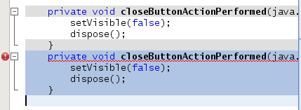
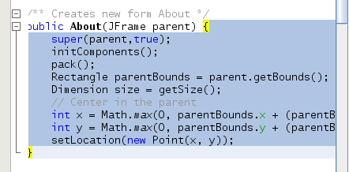
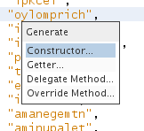
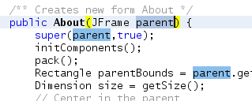
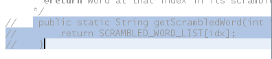
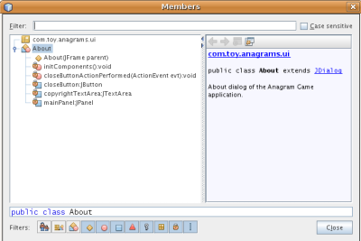
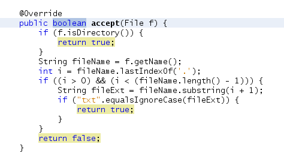

Прочитав топик mikeborozdin вспомнил что сам не давно перешел с Zend Sudio for Eclipse на NetBeans. Дело в том что я долгое время использовал Эклипс для php/python проектов и настолько привык к ней что посмотреть что за зверь NB, по совету коллеги, долго не решался. Когда же все таки скачал и установил NB был удивлен практичностью и удобством последней. Примерно в тоже время в интернете я нашел статью о полезных горячих клавишах для NB, перевод которой под катом. Буду рад если она сэкономит вам время при работе.
1. Move/copy up/down - перемещение и копирование блока
Выделенный текст можно перемещать вверх или вниз при помощи комбинации
Ctrl-Shift-↑↓. Если вместо Ctrl удерживать Alt — выделенный текс скопируется.
Примечание для NetBeans 7.3: в версии 7.3 сделано наоборот. Перемещение блока - Alt-Shift-Стрелки, а копирование Ctrl-Shift-Стрелки.

2. Capture inner/outer syntactic element - выделение блока кода
Каждый раз при нажатии Alt-Shift-. (альт-шифт-точка) выделяться все содержимое блока. При повторном нажатии количество выделенных элементов увеличивается. Комбинация Alt-Shift- (альт-шифт-запятая), работает в точности наоборот. Например, блок кода на скриншоте был выделен нажатием комбинацией Alt-Shift-. :

3. Generate code skeletons - заготовки кода
Процесс создания конструкторов, деструкторов и т.д. можно автоматизировать, просто нажав Alt-Insert и выбрав необходимое из появившегося меню.

4. Inplace rename - переименование объекта
Если необходимо переименовать класс или метод название которого исползуеться болше одного раза это действие можно ускорить выделив его и нажать Ctrl-R. Теперь при переименовании объекта автоматически будут переименовываться остальные аналогичные объекты, вплоть до нажатия кнопки Escape.

5. Add/Remove comment lines - добавление и удаление комментариев
Выберите одну или несколько строк, нажмите Ctrl-/, строки закомментируютсь, как показано на рисунке ниже. Повторное нажатие будет иметь обратный эффект. В прежних версиях NetBeans для этой цели исползовались две горячие клавиши. Теперь они объединены в одну.

6. Inspect members/hierarchy - просмотр свойств, методов, иерархии
Методы класса могут быть отображены и отфильтрованы при помощи Alt-F12. Ctrl-F12 сделает тоже но уже для всего файла.

7. Switch between documents - переключение между файлами
Если у вас есть несколько документов, открытых в то же время, нажмите Ctrl и Tab для переключения между ними.
8. Jump to last edit - переход к последнему месту редактирования текста
Часто бывает нужно перейти к строке, которую редактировали ранее, Ctrl-Q нам в этом поможет. Кроме того, вы можете нажать кнопку, в левом верхнем углу редактора(см. скриншот).

9. Bookmarks - закладки
При нажатии Ctrl-Shift-M текущая строка заносится в закладки и к ней можно будет вернутся в будущем. Если строка добавлена в закладки слева от нее отображается иконка до тех пор пока мы не удалим ее из закладок при помощи той же комбинации Ctrl-Shift-M.

10. Highlight exit points - подсветка точех выхода из функции
Хотите видеть все точки выхода(return) из метода? Просто установите курсор на возвращаемый тип в объявлении метода.
